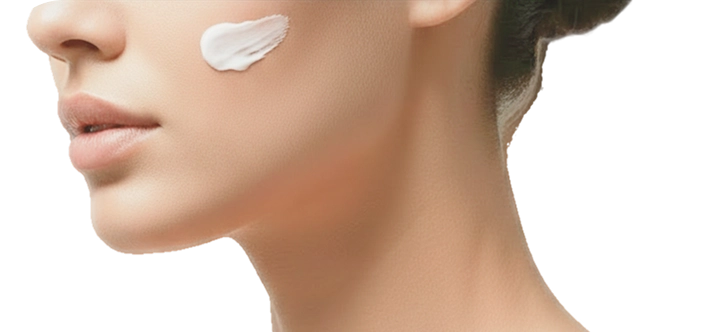

3 244 ₽
@@include('./_btn.html', {text: "В корзину", link: "#", class: "top-section__add2cart btn"})
01
Заполняете диагностическую анкету и оплачиваете услугу.
02
В срок до семи календарных дней мы отправляем Вам результаты диагностики на электронную почту или через мессенджер. Предпочтительный способ отправки Вы указываете при заполнении анкеты.
03
Если Вы решаете выкупить подобранные для Вас косметические средства, то при покупке любых позиций на сумму от 7000 рублей, диагностика будет для Вас В ПОДАРОК!
Для этого напишите нам и мы рассчитаем стоимость Вашей покупки с учётом вычета стоимости диагностики.
04
Если Вы выкупаете средства, подобранные в рамках диагностики, в полном объёме, то в подарок, плюс к бесплатной диагностике, мы предоставим Вам скидку в размере 10 % на Ваш заказ.
Забрать заказ можно по предварительной договорённости лично в «Бизнес-центр Каменноостровский-40», по адресу Каменноостровский просп., д. 40, 2 этаж, кабинет 202.
Или удобным для Вас способом доставки. Оплата доставки осуществляется за счёт покупателя.